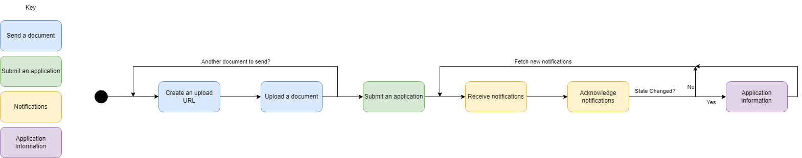

Submit an application to change the Land Register
HM Land Registry (HMLR) is developing a new service to improve the process of submitting information to HMLR.
As a result, we’re making changes to the developer pack to provide integrators with the information they need to replace the existing e-DRS SOAP API with the new version.
Below you’ll find a list of the latest updates to the developer pack and schema for the new Submit an application to change the Land Register API. You’ll also find more information about the new API and why we’re making this change.
Feedback can be provided publicly on the GitHub issue or privately to our email channelpartners@landregistry.gov.uk.
Latest updates to the developer pack
Updates to the developer pack include:
- new information about managing HMLR notifications
- new technical requirements for specific schema elements (for example, value bands)
- new full lists of transactions and documents
- a new list of validation rules
- new names for APIs to better describe their purpose
- new layout of content pages
Updates to the schema include:
- renaming
ap1_warning_understoodtosubmission_warning_understood - new descriptions on all fields
- new
fee_in_pencetoTransactionobjects - removal of
external_ref_id, replacing it with the HTTP HeaderIdempotency-Key - moving several properties on
Partyinto adetailsfield, which can be one ofPrivateIndividual,UkCompany,OverseasCompany,OtherOrganisationorUnknownParty - added
file_lengthandfile_sha256properties to the create upload URL request - changing the
document_typeenum in the create upload URL to contain all document types - changing the type of
OrderLodger.emailfromEmailAddresstostring - removing
full_addressfields from all address detail types - removing
vdd_account_number - making
document_idrequired - adding regex check to
title_number - adding a
conveyancers_certificateboolean, when providing aCERT_REG_CHdocument - changing data types of
addresses,documents,parties,transactionsandtitlesfrom arrays to objects. The key of the object is used as the object reference - removal of
referencefromAddress,DocumentDetails,PartyandTransactionobjects - adding a new
priorityfield on theTransactionobject - adding
warningsto the application status response - new schema documentation for the upload a document
PUTrequest - removal
PROPERTY_ADDRESS,TRANSFER_ASSENT_ADDRESSandCURRENT_ADDRESSas options foraddress_for_service_option - adding
relates_to_new_titlefield on theTransactionobject - renaming
OrderLodgertoApplicationLodger - renaming
order_request_idtoapplication_request_id
Why we’re making changes
The new Submit an application to change the Land Register API will help to lodge applications with HMLR to update the register or create a new lease or transfer of part. This new API will replace the existing e-DRS SOAP API and is designed to help applicants get their applications right the first time.
The new system will provide a faster and more responsive service than before. It’ll help identify errors prior to acceptance of an application, resulting in fewer requisitions and an improved experience for our customers.
To achieve this, the new API will:
- collect and validate more data than the current version
- increase the number of automated checks on application data prior to submission
- automatically check the format and structure of data
- validate information added to the application against information already on the register
- in future, check, compare and validate the data you provide, and the information contained in the attached documents
In return, you’ll benefit from:
- increased output and data quality: With built-in checks on all application types, including charge or transfer transactions, you’ll face fewer requisitions
- consistent results across services: You’ll get parity of outcomes across our digital services
- greater data confidence and automation: More accurate data will provide opportunities to streamline our processes and improve the service for customers
- error prevention: The system will help you catch and fix administrative errors before submission
- improved attachment process: Attaching and classifying deeds will be quicker and more straightforward
- upgraded technology: You’ll benefit from a faster, more responsive platform
Changes from the SOAP API
We’ve made several important updates to the new RESTful API:
- Document uploads before application submission: you will now need to upload documents before submitting an application
- JSON format: instead of using XML, the request bodies for the new APIs will use the simpler, more efficient JSON format
- Asynchronous application submission: when you submit an application, a successful response means the request has been received. Acceptance and prioritisation will occur after validation has been applied
- Renaming applications to transactions: applications from the SOAP request are now referred to as Transactions
- Removing notes: the Notes section is no longer included but additional data fields have been added to collect the data commonly found in this field
- New fields: transaction specific data has been included, initially for transfer and charge transactions including charge values and information on joint tenancies
- Fees will be automatically calculated: this enhancement will come in a later version
Using the new API will mean that applications are only accepted onto the day list when the data provided is both valid and correct. Applications with validation errors will not be accepted. This will significantly reduce the number of avoidable administrative requisitions, identify common avoidable mistakes such as name discrepancies or missing details and thus increase our ability to automate applications.
The new service will have endpoints to support:
- Send a document API - This two-step process includes generating an upload URL and requesting to upload the document
- Submit an application API - The ability to request to submit an application to HM Land Registry
- Application information API - The ability to fetch the latest information about a specific application
- Notifications API - The ability to collect notifications about applications that have been submitted
Diagrams
Submit an application to change the Land Register API

API specification
General API information
Authentication
Access to our API endpoints requires: a valid SSL certificate and an active Business Gateway user account.
SSL certificate
A valid SSL certificate, issued by Business Gateway, is required. This certificate is used to enable mutual SSL authentication and must be installed on the consumer (your) system.
You should;
- install SSL certificates issued by HM Land Registry as trusted root
- install client digital certificate issued by HM Land Registry into client key store
Basic authentication
An active Business Gateway user account is required. Access to our API endpoints is granted via successful authorisation using Basic authentication.
You should:
- provide your username and password as Basic authentication
HTTP 500 Errors
Although measures have been taken to ensure the API is robust and highly available, there may be cases where HMLR systems cannot respond to requests correctly. In such cases, the API will respond with a HTTP 500 error (Internal Server Error), meaning we could not process the request due to an issue within HMLR. This error will not provide much detail about the error externally but will alert a member of the HMLR support team to investigate the issue.
If you receive a 500 error from the API, you should wait a short period of time and then retry the request. If, after a few retries, you are still receiving the same error, please contact the support team.
Note that a 500 error does not indicate if the request correct or incorrect, only that there was an issue internal to the API, and the request should be retried. Visit the Mozilla web documentation for more information about HTTP response codes.
Removal of notes
The Notes field in the SOAP application submission request was used for several purposes that made it difficult for HMLR systems to validate the correct data in the application. This field has been replaced with other ways to perform common actions the Notes field was previously used for, including:
- ROE-ID (Registration of Overseas Entity ID) - this should be attached as a document of type
EVIDENCEfor the relevant transaction - Company charges certificate – a new boolean field,
conveyancers_certificate, has been added to capture this information. This value must be provided when aCERT_REG_CHdocument is uploaded - name variation – names are now required to be an exact match
- cover letter – should now be uploaded as a document of type
EVIDENCEwith the relevant transaction - request to merge or close leasehold titles – the appropriate transaction type should now be selected for this purpose
Glossary
| Term | Description |
|---|---|
| Application Programming Interface (API) | A set of routines, protocols and tools for building software applications |
| Application | The data submitted to HM Land Registry to request to make a change to the register |
| Case Management System (CMS) | Software used by legal firms to manage business matters, including conveyancing |
| Charge | A Charge is a legal document that creates a financial burden (charge) against the property when the property has been used as security for the loan |
| Electronic Document Registration Service (e-DRS) | A group of services that allow users to submit electronic applications to change the register, along with supporting documents |
| HMLR Reference | The identifier for an application that has been added to the day list. Previously named ABR (Application barcode reference) |
| Hypertext transfer protocol (HTTP) | A protocol to transfer hypertext requests and information between servers and browsers |
| Joint Tenants | Joint tenants hold the property on trust for themselves. This means that in the event of the death of one of the joint owners the deceased parties share would automatically revert to the surviving owner. The HM Land Registry would only require a certified copy of the Death Certificate of the deceased owner to update the register |
| JavaScript Object Notation (JSON) | JSON is a lightweight data interchange format, containing a collection of name/value pairs and ordered lists of values |
| Proprietor | The Proprietor is the current registered owner of land or property as shown in the Official Copy Register Entries |
| Simple Object Access Protocol (SOAP) | A protocol specification for exchanging structured information in the implementation of web services |
| Secure Sockets Layer (SSL) | A protocol developed for transmitting private documents via the internet. SSL uses asymmetric cryptography to encrypt data - a public key known to everyone and a private key known only to the recipient of the message |
| Uniform Resource Locator (URL) | A string that supplies the internet address of a web site or resource on the web, along with the protocol by which the site or resource is accessed |
| Variable Direct Debit (VDD) | A payment method where the customer enters into an agreement with the merchant giving authority to directly debit a nominated account in payment for goods or services. Set via HM Land Registry portal. |